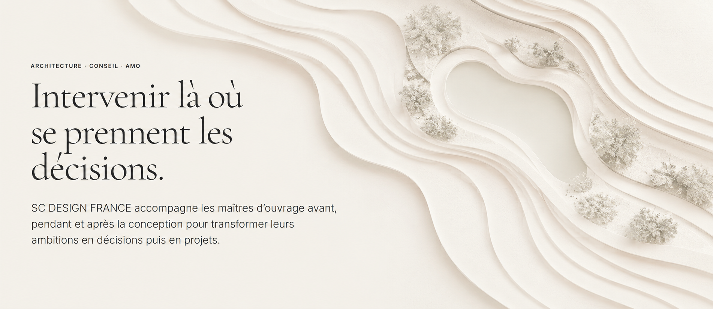

Diagnostic stratégique
Comprendre le site, le besoin et les véritables enjeux avant d’engager le projet.

ARCHITECTURE · CONSEIL · AMO
SC DESIGN FRANCE accompagne les maîtres d’ouvrage avant, pendant et après la conception pour transformer leurs ambitions en décisions puis en projets.
Comprendre le site, le besoin et les véritables enjeux avant d’engager le projet.
Transformer les ambitions du maître d’ouvrage en programme cohérent, réaliste et évolutif.
Définir les principes architecturaux, paysagers et d’usage qui donneront sa cohérence au projet.
Accompagner le maître d’ouvrage dans ses décisions, consultations, arbitrages et investissements.
Intégrer incendies, inondations, sécheresse, chaleur et évolution des ressources dans la transformation du site.
Faire de l’identité, des usages et de l’expérience des visiteurs une composante du projet.
PREMIÈRE ÉTAPE
Présentez-nous votre territoire, votre bâtiment ou votre problématique.